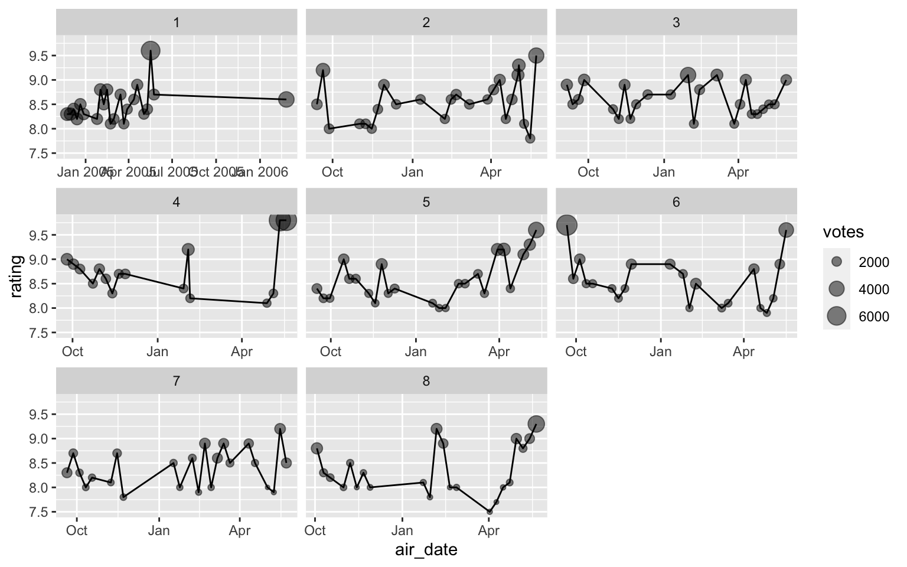
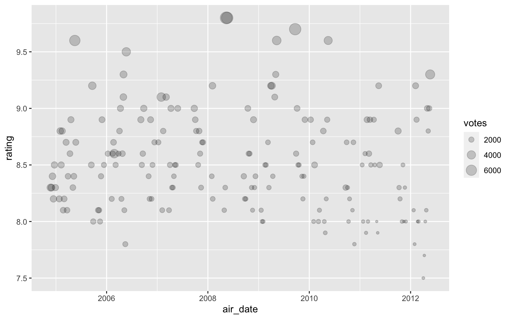
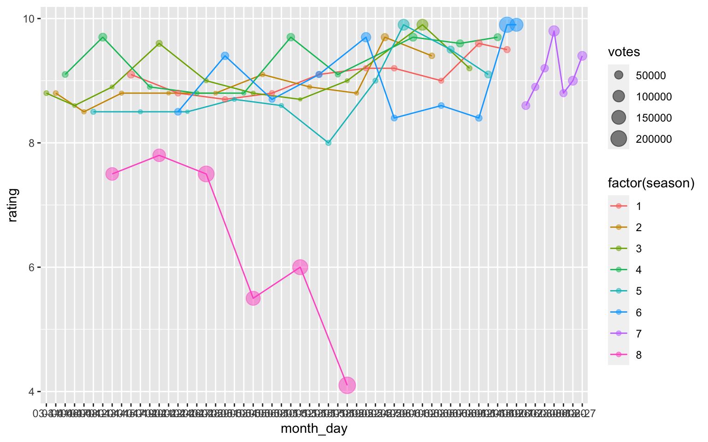
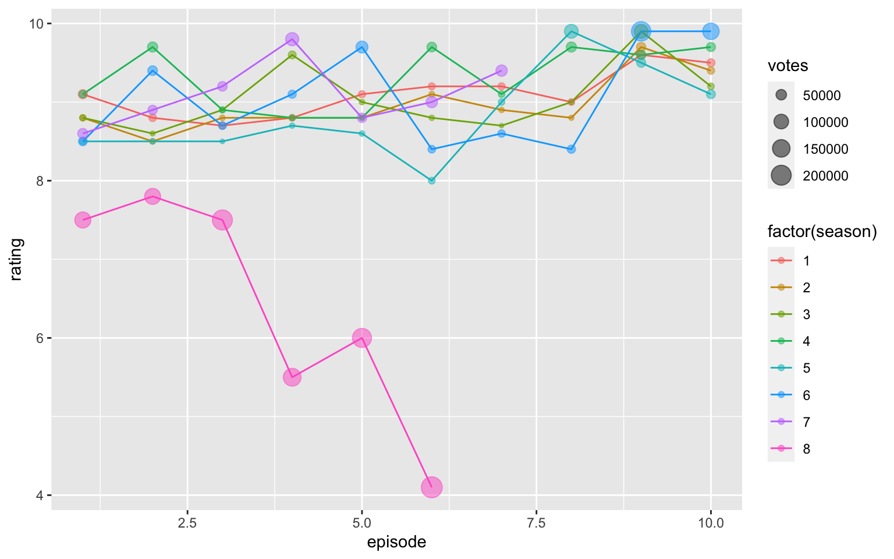
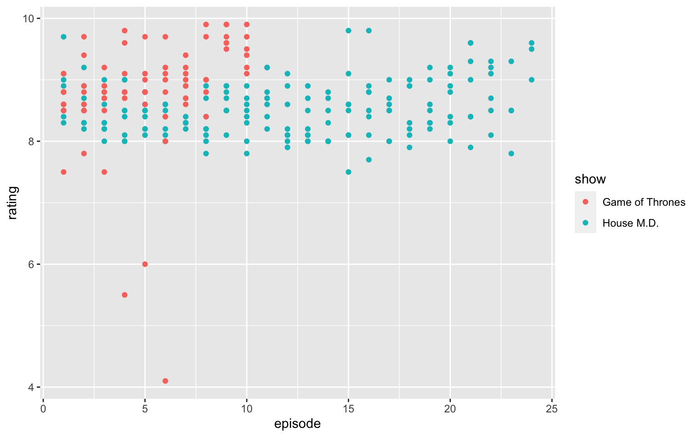
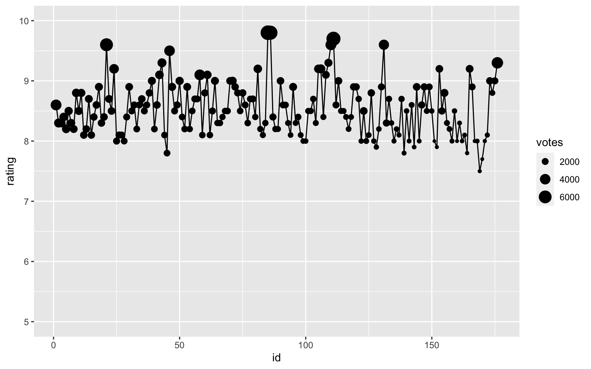
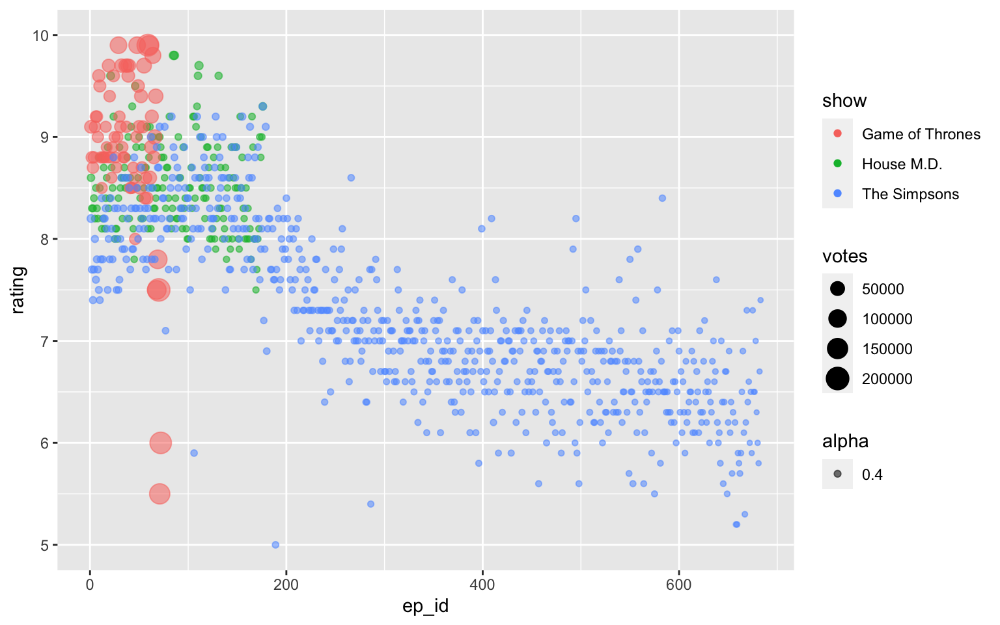

TODO
library(tidyverse)
source("../2020-08-28-simpsons/rvest_scraper.R")house <- grab_imdb_ratings("tt0412142", c(1:8))house %>%
ggplot(aes(air_date, rating)) +
geom_line() +
geom_point(aes(size = votes), alpha = 0.5) +
facet_wrap(~ season, scales = "free_x")
house %>%
ggplot(aes(air_date, rating)) +
geom_point(aes(size = votes), alpha = 0.2)
got <- grab_imdb_ratings("tt0944947", c(1:8))
got %>%
mutate(month_day = format(air_date, "%m-%d"))## # A tibble: 73 x 8
## show season episode air_date title rating votes month_day
## <chr> <int> <int> <date> <chr> <dbl> <dbl> <chr>
## 1 Game of T… 1 1 2011-04-17 Winter Is Coming 9.1 39591 04-17
## 2 Game of T… 1 2 2011-04-24 The Kingsroad 8.8 30035 04-24
## 3 Game of T… 1 3 2011-05-01 Lord Snow 8.7 28400 05-01
## 4 Game of T… 1 4 2011-05-08 Cripples, Bastar… 8.8 26952 05-08
## 5 Game of T… 1 5 2011-05-15 The Wolf and the… 9.1 28040 05-15
## 6 Game of T… 1 6 2011-05-22 A Golden Crown 9.2 27751 05-22
## 7 Game of T… 1 7 2011-05-29 You Win or You D… 9.2 28248 05-29
## 8 Game of T… 1 8 2011-06-05 The Pointy End 9 26316 06-05
## 9 Game of T… 1 9 2011-06-12 Baelor 9.6 37112 06-12
## 10 Game of T… 1 10 2011-06-19 Fire and Blood 9.5 32576 06-19
## # … with 63 more rowsgot %>%
mutate(day_of_year = as.integer(format(air_date, "%j"))) %>%
ggplot(aes(day_of_year, rating, color = factor(season))) +
geom_line(aes(group = season)) +
geom_point(aes(size = votes), alpha = 0.5) 
got %>%
mutate(month_day = format(air_date, "%m-%d")) %>%
ggplot(aes(month_day, rating, color = factor(season))) +
geom_line(aes(group = season)) +
geom_point(aes(size = votes), alpha = 0.5) 
got %>%
ggplot(aes(episode, rating, color = factor(season))) +
geom_line(aes(group = season)) +
geom_point(aes(size = votes), alpha = 0.5) 
bind_rows(house, got) %>%
ggplot(aes(episode, rating, color=show)) +
geom_point()
house %>%
mutate(id = seq.int(nrow(house))) %>%
ggplot(aes(id, rating)) +
geom_line() +
geom_point(aes(size = votes)) +
ylim(5, 10)
simpsons <- grab_imdb_ratings("tt0096697", c(1:31))bind_rows(house, got, simpsons) %>%
group_by(show) %>%
mutate(ep_id = row_number()) %>%
ggplot(aes(ep_id, rating, color = show, alpha = 0.4)) +
# geom_line() +
geom_point(aes(size = votes)) +
ylim(5, 10)## Warning: Removed 3 rows containing missing values (geom_point).